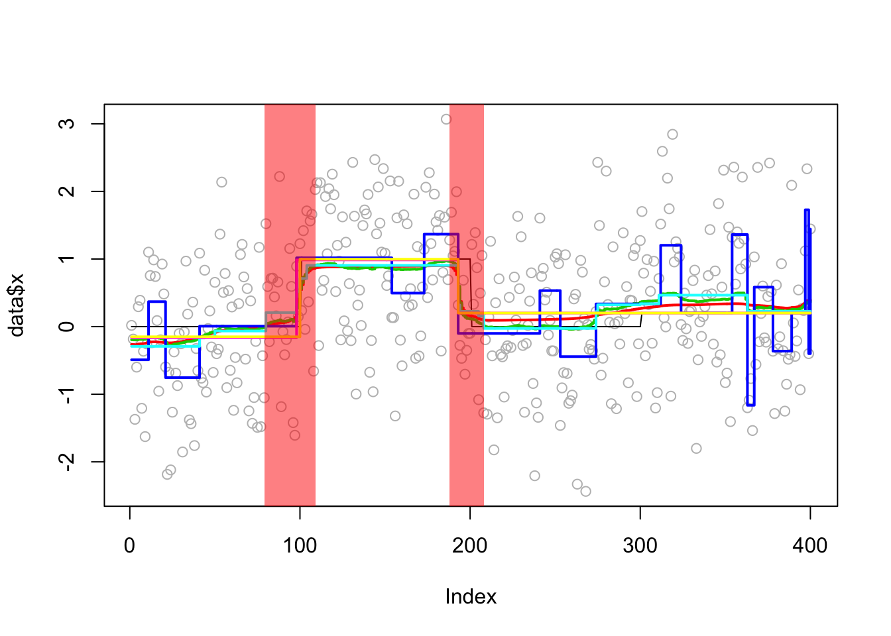
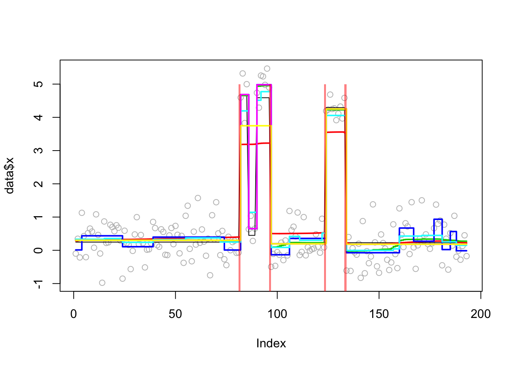
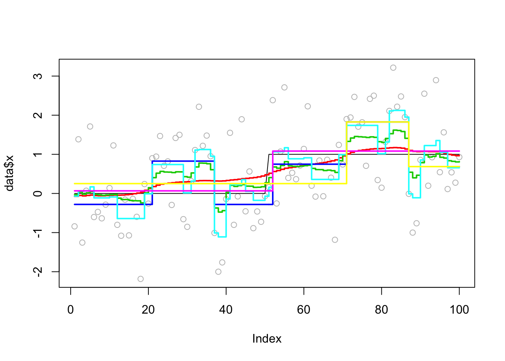

changepoint
stephens999
2018-10-18
Last updated: 2018-10-19
workflowr checks: (Click a bullet for more information)-
✔ R Markdown file: up-to-date
Great! Since the R Markdown file has been committed to the Git repository, you know the exact version of the code that produced these results.
-
✔ Environment: empty
Great job! The global environment was empty. Objects defined in the global environment can affect the analysis in your R Markdown file in unknown ways. For reproduciblity it’s best to always run the code in an empty environment.
-
✔ Seed:
set.seed(20180414)The command
set.seed(20180414)was run prior to running the code in the R Markdown file. Setting a seed ensures that any results that rely on randomness, e.g. subsampling or permutations, are reproducible. -
✔ Session information: recorded
Great job! Recording the operating system, R version, and package versions is critical for reproducibility.
-
Great! You are using Git for version control. Tracking code development and connecting the code version to the results is critical for reproducibility. The version displayed above was the version of the Git repository at the time these results were generated.✔ Repository version: 744b917
Note that you need to be careful to ensure that all relevant files for the analysis have been committed to Git prior to generating the results (you can usewflow_publishorwflow_git_commit). workflowr only checks the R Markdown file, but you know if there are other scripts or data files that it depends on. Below is the status of the Git repository when the results were generated:
Note that any generated files, e.g. HTML, png, CSS, etc., are not included in this status report because it is ok for generated content to have uncommitted changes.Ignored files: Ignored: .DS_Store Ignored: .Rhistory Ignored: .Rproj.user/ Ignored: analysis/.Rhistory Untracked files: Untracked: analysis/null.Rmd Untracked: analysis/test.Rmd Untracked: data/geneMatrix.tsv Untracked: data/liter_data_4_summarize_ld_1_lm_less_3.rds Untracked: data/meta.tsv Untracked: docs/figure/test.Rmd/
Expand here to see past versions:
Introduction
Here we try susie on some example change point problems, and compare with other methods for change point detection in the changepoint package (penalized methods), bcp package (Bayesian MCMC method), and genlasso (L1 penalty method).
First we define some useful functions to run susie on changepoint problems and plot the CSs.
susie_cp = function(y,auto=FALSE,...){
n=length(y)
X = matrix(0,nrow=n,ncol=n-1)
for(j in 1:(n-1)){
for(i in (j+1):n){
X[i,j] = 1
}
}
if(auto){
s = susie_auto(X,y,...)
} else {
s = susie(X,y,...)
}
return(s)
}
#plot a time series y with confidence sets from susie fit s overlaid
# does - 0.5 so that singletons show up
# this is a ggplot version
susie_plot_cp = function(s,y){
library("ggplot2")
df<-data.frame(x = 1:length(y),y = y)
CS = s$sets$cs
p= ggplot(df) + geom_point(mapping=aes_string(x="x", y="y"))
for(i in 1:length(CS)){
p = p + annotate("rect", fill = "red", alpha = 0.5,
xmin = min(CS[[i]])-0.5, xmax = max(CS[[i]])+0.5,
ymin = -Inf, ymax = Inf)
}
p
}
# this is just a function to add the changepoints to a base grapics plot
plot_cs = function(s){
CS = s$sets$cs
for(i in 1:length(CS)){
rect(min(CS[[i]])-0.5,-5,max(CS[[i]])+0.5,5,col = rgb(1,0,0,alpha=0.5),border=NA)
}
}Simple simulated example
This example comes from Killick and Eckley
library(changepoint)Loading required package: zoo
Attaching package: 'zoo'The following objects are masked from 'package:base':
as.Date, as.Date.numericSuccessfully loaded changepoint package version 2.2.2
NOTE: Predefined penalty values changed in version 2.2. Previous penalty values with a postfix 1 i.e. SIC1 are now without i.e. SIC and previous penalties without a postfix i.e. SIC are now with a postfix 0 i.e. SIC0. See NEWS and help files for further details.set.seed(10)
eg1=c(rnorm(100,0,1),rnorm(100,1,1),rnorm(100,0,1),rnorm(100,0.2,1))
ts.plot(eg1,xlab="Index")
Expand here to see past versions of unnamed-chunk-2-1.png:
| Version | Author | Date |
|---|---|---|
| a45f3cd | stephens999 | 2018-10-18 |
true_mean = c(rep(0,100),rep(1,100),rep(0,100),rep(0.2,100))Here we apply susie to this example. It finds 2 (out of the three) changepoints.
library("susieR")
eg1.s = susie_cp(eg1)
ts.plot(eg1,xlab="Index")
lines(predict(eg1.s),col=2,lwd=2)
plot_cs(eg1.s)
Expand here to see past versions of unnamed-chunk-3-1.png:
| Version | Author | Date |
|---|---|---|
| a45f3cd | stephens999 | 2018-10-18 |
Try the bcp package
library(bcp)Loading required package: grideg1.bcp<- bcp(eg1)
plot(eg1.bcp, main = "Univariate Change Point Example")
Expand here to see past versions of unnamed-chunk-4-1.png:
| Version | Author | Date |
|---|---|---|
| a45f3cd | stephens999 | 2018-10-18 |
legacyplot(eg1.bcp)
plot(eg1.bcp$posterior.prob[-1], susie_get_PIP(eg1.s))
plot(eg1.bcp$posterior.mean, predict(eg1.s))
plot(eg1.bcp$posterior.prob[-1])
points(susie_get_PIP(eg1.s), col = 2)
plot(eg1)
lines(true_mean, col = 2, lwd = 2)
lines(predict(eg1.s), col = 3, lwd = 2)
lines(eg1.bcp$posterior.mean, col = 4, lwd = 2)
mean((eg1.bcp$posterior.mean - true_mean) ^ 2)[1] 0.0366996mean((predict(eg1.s) - true_mean) ^ 2)[1] 0.03081035Lai 2005 data
This is a real-data example from the changepoint package.
data(Lai2005fig4)
lai = Lai2005fig4[,5]
lai.default=cpt.mean(lai,method="PELT")
lai.s = susie_cp(lai)
lai.bcp = bcp(lai)
lai.bcp.long = bcp(lai,mcmc=5000)Results from changepoint:
plot(lai.default,pch=20,col="grey",cpt.col="black",type="p",xlab="Index") 
Expand here to see past versions of unnamed-chunk-6-1.png:
| Version | Author | Date |
|---|---|---|
| a45f3cd | stephens999 | 2018-10-18 |
cpts(lai.default)[1] 81 85 89 96 123 133coef(lai.default)$mean
[1] 0.2468910 4.6699210 0.4495538 4.5902489 0.2079891 4.2913844 0.2291286From susie (which seems to “miss” one of the changepoints):
plot(lai)
lines(predict(lai.s),col=2)Expand here to see past versions of unnamed-chunk-7-1.png:
| Version | Author | Date |
|---|---|---|
| a45f3cd | stephens999 | 2018-10-18 |
lai.s$elbo [1] -Inf -345.8855 -340.9082 -332.0314 -320.1672 -310.2676 -302.9654
[8] -297.6058 -293.6073 -290.5957 -288.3099 -286.5210 -284.8860 -282.7483
[15] -280.1089 -278.0768 -276.6409 -275.5822 -274.7859 -274.1864 -273.7356
[22] -273.3947 -273.1329 -272.9270 -272.7608 -272.6239 -272.5094 -272.4130
[29] -272.3319 -272.2641 -272.2079 -272.1621 -272.1250 -272.0952 -272.0716
[36] -272.0529 -272.0381 -272.0265 -272.0175 -272.0105 -272.0051 -272.0010
[43] -271.9979 -271.9955 -271.9938 -271.9925 -271.9915From bcp:
plot(lai)
lines(lai.bcp$posterior.mean, col = 3, lwd = 2)
lines(lai.bcp.long$posterior.mean, col = 4, lwd = 2)plot(lai.bcp.long$posterior.prob)
which(lai.bcp.long$posterior.prob>0.99)[1] 53 54 81 85 89 96 123 133See if this is maybe a convergence issue solved by susie_auto:
lai.s.auto = susie_cp(lai,auto=TRUE)
plot(lai)
lines(predict(lai.s.auto),col=2)
plot_cs(lai.s.auto)
lai.s.auto$elbo [1] -Inf -245.7007 -245.6279 -245.5400 -245.4322 -245.2919 -245.0801
[8] -244.6691 -243.6458 -242.1472 -241.9562 -241.8816 -241.8067 -241.7264
[15] -241.6426 -241.5578 -241.4743 -241.3936 -241.3169 -241.2447 -241.1771
[22] -241.1140 -241.0552 -241.0004 -240.9494 -240.9017 -240.8572 -240.8154
[29] -240.7762 -240.7393 -240.7045 -240.6717 -240.6407 -240.6114 -240.5836
[36] -240.5572 -240.5322 -240.5084 -240.4858 -240.4643 -240.4439 -240.4244
[43] -240.4059 -240.3882 -240.3714 -240.3554 -240.3401 -240.3255 -240.3116
[50] -240.2984 -240.2858 -240.2737 -240.2622 -240.2513 -240.2408 -240.2309I wonder if this is an example where the auto version is also finding a local optimum (with many changepoints), and that the best solution would have fewer? Maybe investigate further later.
s0 = susie_init_coef(cpts(lai.default),diff(unlist(coef(lai.default))),length(lai)-1)
lai.s_b = susie_cp(lai,s_init=s0)
plot(lai)
lines(predict(lai.s_b),col=2)
plot_cs(lai.s_b)
lai.s_b$elbo [1] -Inf -476.7494 -429.8976 -383.4484 -348.1532 -320.5661 -302.5209
[8] -289.8122 -280.1721 -272.7621 -267.0347 -262.5531 -258.9807 -256.0733
[15] -253.6597 -251.6212 -249.8752 -248.3625 -247.0400 -245.8753 -244.8437
[22] -243.9256 -243.1053 -242.3700 -241.7091 -241.1139 -240.5767 -240.0911
[29] -239.6517 -239.2535 -238.8925 -238.5649 -238.2676 -237.9977 -237.7527
[36] -237.5303 -237.3285 -237.1456 -236.9799 -236.8299 -236.6943 -236.5718
[43] -236.4613 -236.3618 -236.2722 -236.1918 -236.1197 -236.0551 -235.9974
[50] -235.9458 -235.8999 -235.8590 -235.8227 -235.7905 -235.7620 -235.7367
[57] -235.7145 -235.6948 -235.6775 -235.6623 -235.6490 -235.6372 -235.6270
[64] -235.6180 -235.6102 -235.6034 -235.5974 -235.5922 -235.5877 -235.5838
[71] -235.5804 -235.5775 -235.5749 -235.5727 -235.5708 -235.5692 -235.5678
[78] -235.5665 -235.5655 -235.5646lai.s_c = susie_cp(lai,s_init=lai.s_b,estimate_prior_variance=TRUE)
plot_cs(lai.s_c)
plot(lai)
lines(predict(lai.s_b),col=2,type="s")
plot_cs(lai.s_c)
lai.s_c$elbo [1] -Inf -218.6124 -218.3783 -218.1978 -218.0523 -217.9320 -217.8306
[8] -217.7436 -217.6682 -217.6019 -217.5433 -217.4910 -217.4441 -217.4019
[15] -217.3637 -217.3290 -217.2975 -217.2688 -217.2425 -217.2185 -217.1965
[22] -217.1763 -217.1578 -217.1408 -217.1252 -217.1108 -217.0976 -217.0855
[29] -217.0744 -217.0642 -217.0548 -217.0462 -217.0383 -217.0311 -217.0245
[36] -217.0184 -217.0129 -217.0079 -217.0033 -216.9991 -216.9953 -216.9919
[43] -216.9888 -216.9859 -216.9834 -216.9811 -216.9790 -216.9771 -216.9754
[50] -216.9739 -216.9725 -216.9713 -216.9702 -216.9692Also try trendfilter in the genlasso package:
library("genlasso")Loading required package: MatrixLoading required package: igraph
Attaching package: 'igraph'The following objects are masked from 'package:stats':
decompose, spectrumThe following object is masked from 'package:base':
unionlai.tf = trendfilter(lai,ord=0)
lai.tf.cv = cv.trendfilter(lai.tf)Fold 1 ... Fold 2 ... Fold 3 ... Fold 4 ... Fold 5 ... opt = which(lai.tf$lambda==lai.tf.cv$lambda.min) #optimal value of lambda
lai.tf.fit= lai.tf$fit[,opt]
plot(lai)
lines(lai.tf.fit,type="s",col=2,lwd=2)
bhat.tf = diff(lai.tf$beta[,opt])
bhat.tf = ifelse(abs(bhat.tf<1e-5),0,bhat.tf) # make very small values 0
s0.tf = susie_init_coef(which(bhat.tf!=0),bhat.tf[bhat.tf!=0],length(lai)-1)
lai.s.tf = susie_cp(lai,s_init = s0.tf,estimate_prior_variance=TRUE)
lai.s.tf$elbo [1] -Inf -405.7173 -364.7052 -344.1847 -336.1369 -332.8231 -330.8278
[8] -329.1923 -327.5745 -325.1110 -321.0096 -317.6677 -314.5475 -311.6704
[15] -309.0480 -306.6274 -304.3418 -302.1151 -299.8204 -297.0738 -294.4913
[22] -293.2757 -292.1828 -291.1844 -290.2599 -289.4007 -288.6002 -287.8530
[29] -287.1544 -286.5004 -285.8875 -285.3124 -284.7726 -284.2654 -283.7886
[36] -283.3401 -282.9180 -282.5206 -282.1462 -281.7934 -281.4606 -281.1466
[43] -280.8500 -280.5696 -280.3043 -280.0528 -279.8140 -279.5866 -279.3695
[50] -279.1612 -278.9602 -278.7643 -278.5711 -278.3770 -278.1768 -277.9625
[57] -277.7224 -277.4390 -277.0883 -276.6390 -276.0364 -275.1461 -273.9363
[64] -272.7732 -272.0091 -271.6603 -271.3907 -271.1490 -270.9279 -270.7239
[71] -270.5347 -270.3586 -270.1942 -270.0405 -269.8966 -269.7618 -269.6354
[78] -269.5169 -269.4057 -269.3014 -269.2035 -269.1117 -269.0255 -268.9447
[85] -268.8688 -268.7976 -268.7307 -268.6679 -268.6089 -268.5535 -268.5014
[92] -268.4524 -268.4063 -268.3629 -268.3220 -268.2834 -268.2469 -268.2125
[99] -268.1799 -268.1490 -268.1198plot(lai)
lines(predict(lai.s.tf),col=2)
plot_cs(lai.s.tf)
Example from the BCP package
This one is described as a “hard” example (with one change point) in the bcp examples.
set.seed(5)
x <- rep(c(0,1), each=50)
eg2 <- x + rnorm(50, sd=1)
eg2.bcp <- bcp(eg2)
plot(eg2.bcp, main="Univariate Change Point Example")
Try susie:
eg2.s = susie_cp(eg2)
plot(eg2)
lines(x,lwd=2)
lines(predict(eg2.s),col=2,lwd=2)
lines(eg2.bcp$posterior.mean,col=3,lwd=2)
It is a bit wiggly, so try increasing the number of iterations (from default of 500):
eg2.bcp.long <- bcp(eg2,mcmc = 5000,return.mcmc=TRUE)
plot(eg2)
lines(x,lwd=2)
lines(predict(eg2.s),col=2,lwd=2)
lines(eg2.bcp.long$posterior.mean,col=3,lwd=2)
points(eg2.bcp.long$mcmc.means[1000,],col=4,lwd=2)
points(eg2.bcp.long$mcmc.means[5000,],col=5,lwd=2)plot(colMeans(eg2.bcp.long$mcmc.means),col=4)
lines(eg2.bcp$posterior.mean)
That is suprising that the long and short run agree so closely. But
eg2.bcp.short <- bcp(eg2,mcmc=100,return.mcmc=TRUE)
plot(eg2.bcp.short$posterior.mean,eg2.bcp$posterior.mean)
DNA segmentation example from bcp package
This example comes from demo(coriell) in the bcp package.
data(coriell)
chrom11 <- as.vector(na.omit(coriell$Coriell.05296[coriell$Chromosome==11]))
chrom11.bcp <- bcp(chrom11)
plot(chrom11.bcp, main="Coriell chromosome 11 (bcp)")
Here it compares results with DNAcopy package (also part of the demo)
library("DNAcopy")
n <- length(chrom11)
cbs <- segment(CNA(chrom11, rep(1, n), 1:n), verbose = 0)
cbs.ests <- rep(unlist(cbs$output[6]), unlist(cbs$output[5]))
op <- par(mfrow=c(2,1),col.lab="black",col.main="black")
op2 <- par(mar=c(0,4,4,2),xaxt="n", cex.axis=0.75)
plot(1:n, chrom11.bcp$data[,2], col="grey", pch=20, xlab="Location",
ylab="Posterior Mean",
main="Coriell chromosome 11 (DNAcopy)")
lines(cbs.ests, col="red")
lines(chrom11.bcp$posterior.mean, lwd=2)
par(op2)
op3 <- par(mar=c(5,4,0,2), xaxt="s", cex.axis=0.75)
plot(1:n, chrom11.bcp$posterior.prob, type="l", ylim=c(0,1),
xlab="Location", ylab="Posterior Probability", main="")
for (i in 1:(dim(cbs$output)[1]-1)) {
abline(v=cbs$output$loc.end[i], col="red")
}
par(op3)
par(op)Try susie. Note that this example illustrates a case where a variable (here 66) occurs in multiple CSs… something we don’t yet fully understand the implications of I think.
chrom11.s = susie_cp(chrom11)
plot(1:n, chrom11, col="grey", pch=20, xlab="Location",
ylab="Posterior Mean",
main="Coriell chromosome 11 (DNAcopy)")
lines(predict(chrom11.s),col=2,lwd=2)
chrom11.s$sets$cs
$cs$L2
[1] 51
$cs$L3
[1] 66
$cs$L4
[1] 63 64 66
$cs$L1
[1] 66 67 68 69 70 71
$purity
min.abs.corr mean.abs.corr median.abs.corr
L2 1.0000000 1.0000000 1.0000000
L3 1.0000000 1.0000000 1.0000000
L4 0.9649213 0.9843474 0.9880822
L1 0.9436735 0.9778424 0.9772150
$cs_index
[1] 2 3 4 1
$coverage
[1] 0.95 abline(v=66)
abline(v=51)
An example from the DNAcopy segment function:
set.seed(51)
true_mean = rep(c(-0.2,0.1,1,-0.5,0.2,-0.5,0.1,-0.2),c(137,87,17,49,29,52,87,42))
genomdat <- rnorm(500, sd=0.2) + true_mean
plot(genomdat)
chrom <- rep(1:2,c(290,210))
maploc <- c(1:290,1:210)
genomdat.seg <- segment(CNA(genomdat, chrom, maploc))Analyzing: Sample.1 plot(genomdat.seg)
genomdat.s = susie_cp(genomdat)
plot_cs(genomdat.s)
lines(true_mean,col=1,type="s")
plot(genomdat.s$pip)genomdat.bcp = bcp(genomdat)
plot(genomdat.bcp)
plot(genomdat.bcp$posterior.mean,predict(genomdat.s))This example from DNAcopy too. (commented out for now as takes too long.)
# data(coriell)
#
# #Combine into one CNA object to prepare for analysis on Chromosomes 1-23
#
# CNA.object <-CNA(cbind(coriell$Coriell.05296,coriell$Coriell.13330),coriell$Chromosome,coriell$Position,data.type="logratio",sampleid=c("c05296","c13330"))
#
# s = susie_cp(CNA.object$c13330[!is.na(CNA.object$c13330)])
# plot(CNA.object$c13330[!is.na(CNA.object$c13330)])
# plot_cs(s)Session information
sessionInfo()R version 3.5.1 (2018-07-02)
Platform: x86_64-apple-darwin15.6.0 (64-bit)
Running under: OS X El Capitan 10.11.6
Matrix products: default
BLAS: /Library/Frameworks/R.framework/Versions/3.5/Resources/lib/libRblas.0.dylib
LAPACK: /Library/Frameworks/R.framework/Versions/3.5/Resources/lib/libRlapack.dylib
locale:
[1] en_US.UTF-8/en_US.UTF-8/en_US.UTF-8/C/en_US.UTF-8/en_US.UTF-8
attached base packages:
[1] grid stats graphics grDevices utils datasets methods
[8] base
other attached packages:
[1] DNAcopy_1.55.0 genlasso_1.4 igraph_1.2.2 Matrix_1.2-14
[5] bcp_4.0.3 susieR_0.5.0.0347 changepoint_2.2.2 zoo_1.8-4
loaded via a namespace (and not attached):
[1] Rcpp_0.12.19 knitr_1.20 whisker_0.3-2
[4] magrittr_1.5 workflowr_1.1.1 lattice_0.20-35
[7] stringr_1.3.1 tools_3.5.1 R.oo_1.22.0
[10] git2r_0.23.0 htmltools_0.3.6 matrixStats_0.54.0
[13] yaml_2.2.0 rprojroot_1.3-2 digest_0.6.18
[16] R.utils_2.7.0 evaluate_0.12 rmarkdown_1.10
[19] stringi_1.2.4 compiler_3.5.1 backports_1.1.2
[22] R.methodsS3_1.7.1 pkgconfig_2.0.2 This reproducible R Markdown analysis was created with workflowr 1.1.1